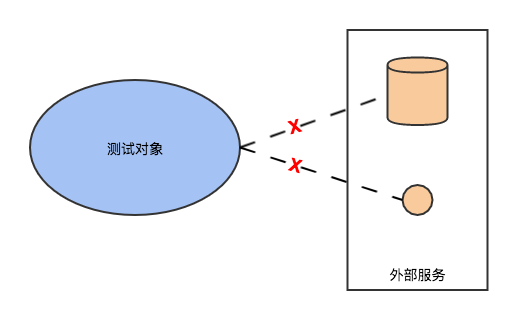

<!DOCTYPE HTML>
<html>
<head><meta name="generator" content="Hexo 3.9.0">
  <meta charset="utf-8">
  <meta http-equiv="X-UA-Compatible" content="IE=edge">
  <meta name="apple-mobile-web-app-capable" content="yes">
  <meta name="apple-mobile-web-app-status-bar-style" content="black">
  <meta name="google-site-verification" content>
  
  <title>面向开发的测试技术（一）：Mock</title>
  <meta name="author" content="Emac">
   <meta name="description" content="引子：自上世纪末Kent Beck提出TDD(Test-Driven Development)开发理念以来，开发和测试的边界变的越来越模糊，从原本上下游的依赖关系，逐步演变成你中有我、我中有你的互赖关系，甚至很多公司设立了新的QE(Quality Engineer)职位。和传统的QA(Quality">
  

  <meta property="og:title" content="面向开发的测试技术（一）：Mock">
  <meta name="viewport" content="width=device-width, initial-scale=1, maximum-scale=1">
  <meta property="og:site_name" content="Emac">
 <meta property="og:image" content="undefined">
  
  <link href="/apple-touch-icon-precomposed.png" sizes="180x180" rel="apple-touch-icon-precomposed">
  <link rel="alternate" href="/atom.xml" title="Emac" type="application/atom+xml">
  <link rel="stylesheet" href="//cdn.bootcss.com/bootstrap/3.3.6/css/bootstrap.min.css">
  <link rel="stylesheet" href="//cdn.bootcss.com/font-awesome/4.5.0/css/font-awesome.min.css">
  <link rel="stylesheet" href="/css/m.min.css">
  <link rel="icon" type="image/x-icon" href="/favicon.ico">
</head>
</html>
<body>
  <div id='wx_pic' style='display:none;'></div>
  <div id="main">
    <div class="behind">
      <div class="back">
        <a href="/" class="black-color"><i class="fa fa-times" aria-hidden="true"></i></a>
      </div>
      <div class="description">
        &nbsp;拾贝
      </div>
    </div>
    <div class="container">
      

  <article class="standard post">
    <div class="title">
      
  
    <h1 class="page-title center">
        面向开发的测试技术（一）：Mock
    </h1>
  


    </div>
    <div class="meta center">
      
<time datetime="2017-04-30T16:00:00.000Z">
  <i class="fa fa-calendar"></i>&nbsp;
  2017-05-01
</time>


    
    &nbsp;
    <i class="fa fa-tag"></i>&nbsp;
    <a href="/categories/arch/">arch</a>


    
    &nbsp;
    <i class="fa fa-tag"></i>&nbsp;
    <a href="/tags/原创/">原创</a>·<a href="/tags/测试/">测试</a>


    </div>
    <hr>
    <div class="picture-container">
      
    </div>
    <blockquote>
<p>引子：自上世纪末Kent Beck提出<a href="https://en.wikipedia.org/wiki/Test-driven_development" target="_blank" rel="noopener">TDD(Test-Driven Development)</a>开发理念以来，开发和测试的边界变的越来越模糊，从原本上下游的依赖关系，逐步演变成你中有我、我中有你的互赖关系，甚至很多公司设立了新的QE(Quality Engineer)职位。和传统的QA(Quality Assurance)不同，QE的主要职责是通过工程化的手段保证项目质量，这些手段包括但不仅限于编写单元测试、集成测试，搭建自动化测试流程，设计性能测试等。可以说，QE身上兼具了QA的质量意识和开发的工程能力。从这篇开始，我会从开发的角度分三期聊聊QE这个亦测试亦开发的角色所需的基本技能。</p>
</blockquote>
<h2 id="1-什么是Mock？"><a href="#1-什么是Mock？" class="headerlink" title="1 什么是Mock？"></a>1 什么是Mock？</h2><p>在软件测试领域，Mock的意思是模拟，简单来说，就是通过某种技术手段模拟测试对象的行为，返回预先设计的结果。这里的关键词是<strong>预先设计</strong>，也就是说对于任意被测试的对象，可以根据具体测试场景的需要，返回特定的结果。打个比方，就像BBC纪录片里面的假企鹅，可以根据拍摄需要作出不同的反应。</p>
<h2 id="2-Mock有什么用？"><a href="#2-Mock有什么用？" class="headerlink" title="2 Mock有什么用？"></a>2 Mock有什么用？</h2><p>理解了什么是Mock，再来看Mock有哪些用途。首先，Mock可以用来解除测试对象对外部服务的依赖（比如数据库，第三方接口等），使得测试用例可以<strong>独立运行</strong>。不管是传统的单体应用，还是现在流行的微服务，这点都特别重要，因为任何外部依赖的存在都会极大的限制测试用例的可迁移性和稳定性。可迁移性是指，如果要在一个新的测试环境中运行相同的测试用例，那么除了要保证测试对象自身能够正常运行，还要保证所有依赖的外部服务也能够被正常调用。稳定性是指，如果外部服务不可用，那么测试用例也可能会失败。通过Mock去除外部依赖之后，不管是测试用例的可迁移性还是稳定性，都能够上一个台阶。</p>
<p></p>
<p>Mock的第二个好处是替换外部服务调用，<strong>提升测试用例的运行速度</strong>。任何外部服务调用至少是跨进程级别的消耗，甚至是跨系统、跨网络的消耗，而Mock可以把消耗降低到进程内。比如原来一次秒级的网络请求，通过Mock可以降至毫秒级，整整3个数量级的差别。</p>
<p>Mock的第三个好处是<strong>提升测试效率</strong>。这里说的测试效率有两层含义。第一层含义是单位时间运行的测试用例数，这是运行速度提升带来的直接好处。而第二层含义是一个QE单位时间创建的测试用例数。如何理解这第二层含义呢？以单体应用为例，随着业务复杂度的上升，为了运行一个测试用例可能需要准备很多测试数据，与此同时还要尽量保证多个测试用例之间的测试数据互不干扰。为了做到这一点，QE往往需要花费大量的时间来维护一套可运行的测试数据。有了Mock之后，由于去除了测试用例之间共享的数据库依赖，QE就可以针对每一个或者每一组测试用例设计一套独立的测试数据，从而很容易的做到不同测试用例之间的数据隔离性。而对于微服务，由于一个微服务可能级联依赖很多其他的微服务，运行一个测试用例甚至需要跨系统准备一套测试数据，如果没有Mock，基本上可以说是不可能的。因此，不管是单体应用还是微服务，有了Mock之后，QE就可以省去大量的准备测试数据的时间，专注于测试用例本身，自然也就提升了单人的测试效率。</p>
<h2 id="3-如何Mock？"><a href="#3-如何Mock？" class="headerlink" title="3 如何Mock？"></a>3 如何Mock？</h2><p>说了这么多Mock的好处，那么究竟如何在测试中使用Mock呢？针对不同的测试场景，可以选择不同的Mock框架。</p>
<h3 id="3-1-Mockito"><a href="#3-1-Mockito" class="headerlink" title="3.1 Mockito"></a>3.1 Mockito</h3><p>如果测试对象是一个方法，尤其是涉及数据库操作的方法，那么<a href="http://site.mockito.org/" target="_blank" rel="noopener">Mockito</a>可能是最好的选择。作为使用最广泛的Mock框架，Mockito出于<a href="http://easymock.org/" target="_blank" rel="noopener">EasyMock</a>而胜于EasyMock，乃至被默认集成进Spring Testing。其实现原理是，通过CGLib在运行时为每一个被Mock的类或者对象动态生成一个<strong>代理对象</strong>，返回<strong>预先设计</strong>的结果。集成Mockito的基本步骤是：</p>
<ol>
<li>标记被Mock的类或者对象，生成代理对象</li>
<li>通过Mockito API定制代理对象的行为</li>
<li>调用代理对象的方法，获得预先设计的结果</li>
</ol>
<p>下面是我GitHub上的<a href="https://github.com/emac/spring-boot-features-demo" target="_blank" rel="noopener">示例工程</a>里的一个例子，</p>
<figure class="highlight java"><table><tr><td class="gutter"><pre><span class="line">1</span><br><span class="line">2</span><br><span class="line">3</span><br><span class="line">4</span><br><span class="line">5</span><br><span class="line">6</span><br><span class="line">7</span><br><span class="line">8</span><br><span class="line">9</span><br><span class="line">10</span><br><span class="line">11</span><br><span class="line">12</span><br><span class="line">13</span><br><span class="line">14</span><br><span class="line">15</span><br><span class="line">16</span><br><span class="line">17</span><br><span class="line">18</span><br><span class="line">19</span><br><span class="line">20</span><br><span class="line">21</span><br><span class="line">22</span><br><span class="line">23</span><br><span class="line">24</span><br><span class="line">25</span><br><span class="line">26</span><br><span class="line">27</span><br><span class="line">28</span><br><span class="line">29</span><br><span class="line">30</span><br></pre></td><td class="code"><pre><span class="line"><span class="meta">@RunWith</span>(SpringRunner<span class="class">.<span class="keyword">class</span>)</span></span><br><span class="line"><span class="class">@<span class="title">SpringBootTest</span></span></span><br><span class="line"><span class="class"><span class="title">public</span> <span class="title">class</span> <span class="title">SignonServiceTests</span> </span>&#123;</span><br><span class="line"></span><br><span class="line">    <span class="comment">// 测试对象，一个服务类</span></span><br><span class="line">    <span class="meta">@Autowired</span></span><br><span class="line">    <span class="keyword">private</span> SignonService signonService;</span><br><span class="line"></span><br><span class="line">    <span class="comment">// 被Mock的类，被服务类所依赖的一个DAO类</span></span><br><span class="line">    <span class="meta">@MockBean</span></span><br><span class="line">    <span class="keyword">private</span> SignonDao dao;</span><br><span class="line"></span><br><span class="line">    <span class="meta">@Test</span></span><br><span class="line">    <span class="function"><span class="keyword">public</span> <span class="keyword">void</span> <span class="title">testFindAll</span><span class="params">()</span> </span>&#123;</span><br><span class="line">        <span class="comment">// SignonService#findAll()内部会调用SignonDao#findAll()</span></span><br><span class="line">        <span class="comment">// 如果不做定制，所有被Mock的类默认返回空</span></span><br><span class="line">        List&lt;Signon&gt; signons = signonService.findAll();</span><br><span class="line">        assertTrue(CollectionUtils.isEmpty(signons));</span><br><span class="line"></span><br><span class="line">        <span class="comment">// 定制返回结果</span></span><br><span class="line">        Signon signon = <span class="keyword">new</span> Signon();</span><br><span class="line">        signon.setUsername(<span class="string">"foo"</span>);</span><br><span class="line">        when(dao.findAll()).thenReturn(Lists.newArrayList(signon));</span><br><span class="line"></span><br><span class="line">        signons = signonService.findAll();</span><br><span class="line">        <span class="comment">// 验证返回结果和预先设计的结果一致</span></span><br><span class="line">        assertEquals(<span class="number">1</span>, signons.size());</span><br><span class="line">        assertEquals(<span class="string">"foo"</span>, signons.get(<span class="number">0</span>).getUsername());</span><br><span class="line">    &#125;</span><br><span class="line">&#125;</span><br></pre></td></tr></table></figure>
<p>从上面的测试用例可以看到，通过Mock服务类所依赖的DAO类，我们可以跳过所有的数据库操作，任意定制返回结果，从而专注于测试服务类内部的业务逻辑。这是传统的非Mock测试所难以实现的。</p>
<p><em>注意：Mockito不支持Mock私有方法或者静态方法，如果要Mock这类方法，可以使用<a href="https://github.com/powermock/powermock" target="_blank" rel="noopener">PowerMock</a>。</em></p>
<h3 id="3-2-WireMock"><a href="#3-2-WireMock" class="headerlink" title="3.2 WireMock"></a>3.2 WireMock</h3><p>如果说Mocketo是瑞士军刀，可以Mock Everything，那么<a href="http://wiremock.org/" target="_blank" rel="noopener">WireMock</a>就是为微服务而生的倚天剑。和处在对象层的Mockito不同，WireMock针对的是<strong>API</strong>。假设有两个微服务，Service-A和Service-B，Service-A里的一个API（姑且称为API-1），依赖于Service-B，那么使用传统的测试方法，测试API-1时必然需要同时启动Service-B。如果使用WireMock，那么就可以<strong>在Service-A端</strong>Mock所有依赖的Service-B的API，从而去掉Service-B这个外部依赖。</p>
<p>同样看一个我GitHub上的<a href="https://github.com/emac/spring-boot-features-demo" target="_blank" rel="noopener">示例工程</a>里的一个例子，</p>
<figure class="highlight java"><table><tr><td class="gutter"><pre><span class="line">1</span><br><span class="line">2</span><br><span class="line">3</span><br><span class="line">4</span><br><span class="line">5</span><br><span class="line">6</span><br><span class="line">7</span><br><span class="line">8</span><br><span class="line">9</span><br><span class="line">10</span><br><span class="line">11</span><br><span class="line">12</span><br><span class="line">13</span><br><span class="line">14</span><br><span class="line">15</span><br><span class="line">16</span><br><span class="line">17</span><br><span class="line">18</span><br><span class="line">19</span><br><span class="line">20</span><br><span class="line">21</span><br><span class="line">22</span><br><span class="line">23</span><br><span class="line">24</span><br><span class="line">25</span><br><span class="line">26</span><br><span class="line">27</span><br><span class="line">28</span><br><span class="line">29</span><br><span class="line">30</span><br><span class="line">31</span><br><span class="line">32</span><br><span class="line">33</span><br><span class="line">34</span><br><span class="line">35</span><br><span class="line">36</span><br><span class="line">37</span><br><span class="line">38</span><br><span class="line">39</span><br><span class="line">40</span><br><span class="line">41</span><br><span class="line">42</span><br><span class="line">43</span><br><span class="line">44</span><br><span class="line">45</span><br></pre></td><td class="code"><pre><span class="line"><span class="meta">@RunWith</span>(SpringRunner<span class="class">.<span class="keyword">class</span>)</span></span><br><span class="line"><span class="class">@<span class="title">WebMvcTest</span>(<span class="title">VacationController</span>.<span class="title">class</span>)</span></span><br><span class="line"><span class="class"><span class="title">public</span> <span class="title">class</span> <span class="title">VacationControllerTests</span> </span>&#123;</span><br><span class="line"></span><br><span class="line">    <span class="comment">// Mock被依赖的另一个微服务</span></span><br><span class="line">    <span class="meta">@Rule</span></span><br><span class="line">    <span class="keyword">public</span> WireMockRule wireMockRule = <span class="keyword">new</span> WireMockRule(<span class="number">3001</span>);</span><br><span class="line">    </span><br><span class="line">    <span class="meta">@Autowired</span></span><br><span class="line">    <span class="keyword">private</span> MockMvc mockMvc;</span><br><span class="line"></span><br><span class="line">    <span class="meta">@Autowired</span></span><br><span class="line">    <span class="keyword">private</span> ObjectMapper objectMapper;</span><br><span class="line"></span><br><span class="line">    <span class="meta">@Before</span></span><br><span class="line">    <span class="function"><span class="keyword">public</span> <span class="keyword">void</span> <span class="title">before</span><span class="params">()</span> <span class="keyword">throws</span> JsonProcessingException </span>&#123;</span><br><span class="line">        <span class="comment">// 定制返回结果</span></span><br><span class="line">        JsonResult&lt;Boolean&gt; expected = JsonResult.ok(<span class="keyword">true</span>);</span><br><span class="line">        stubFor(get(urlPathEqualTo(<span class="string">"/api/vacation/isWeekend"</span>))</span><br><span class="line">                .willReturn(aResponse()</span><br><span class="line">                        .withStatus(OK.value())</span><br><span class="line">                        .withHeader(CONTENT_TYPE, APPLICATION_JSON_UTF8_VALUE)</span><br><span class="line">                        .withBody(objectMapper.writeValueAsString(expected))));</span><br><span class="line">    &#125;</span><br><span class="line"></span><br><span class="line">    <span class="meta">@Test</span></span><br><span class="line">    <span class="function"><span class="keyword">public</span> <span class="keyword">void</span> <span class="title">testIsWeekendProxy</span><span class="params">()</span> <span class="keyword">throws</span> Exception </span>&#123;</span><br><span class="line">        <span class="comment">// 构造请求参数</span></span><br><span class="line">        VacationRequest request = <span class="keyword">new</span> VacationRequest();</span><br><span class="line">        request.setType(PERSONAL);</span><br><span class="line">        OffsetDateTime lastSunday = OffsetDateTime.now().with(TemporalAdjusters.previous(SUNDAY));</span><br><span class="line">        request.setStart(lastSunday);</span><br><span class="line">        request.setEnd(lastSunday.plusDays(<span class="number">1</span>));</span><br><span class="line"></span><br><span class="line">        MockHttpServletRequestBuilder builder = MockMvcRequestBuilders.get(<span class="string">"/vacation/isWeekend"</span>);</span><br><span class="line">        request.toMap().forEach((k, v) -&gt; builder.param(k, v));</span><br><span class="line">        JsonResult&lt;Boolean&gt; expected = JsonResult.ok(<span class="keyword">true</span>);</span><br><span class="line"></span><br><span class="line">        mockMvc.perform(builder)</span><br><span class="line">                <span class="comment">// 验证返回结果和预先设计的结果一致</span></span><br><span class="line">                .andExpect(status().isOk())</span><br><span class="line">                .andExpect(content().contentType(APPLICATION_JSON_UTF8))</span><br><span class="line">                .andExpect(content().string(objectMapper.writeValueAsString(expected)));</span><br><span class="line">    &#125;</span><br><span class="line">&#125;</span><br></pre></td></tr></table></figure>
<p>和Mockito类似，在测试用例中集成WireMock的基本步骤是：</p>
<ol>
<li>声明代理服务，以替代被Mock的微服务</li>
<li>通过WireMock API定制代理服务的返回结果</li>
<li>调用代理服务，获得预先设计的结果</li>
</ol>
<p>值得一提的是，除了API方式的集成，WireMock还支持以Jar包的形式独立运行，从配置文件中加载预先设计的响应结果，以替代被Mock的微服务。更多信息可以参阅<a href="http://wiremock.org/docs/" target="_blank" rel="noopener">官方文档</a>。</p>
<p>其他类似的Mock API的框架还有OkHttp的<a href="https://github.com/square/okhttp/tree/master/mockwebserver" target="_blank" rel="noopener">mockwebserver</a>，<a href="https://github.com/dreamhead/moco" target="_blank" rel="noopener">moco</a>和<a href="http://www.mock-server.com/" target="_blank" rel="noopener">mockserver</a>。mockwebserver也属于嵌入式Mock框架的范畴，但功能过于简单。moco，mockserver虽然功能完善，但需要独立部署，和WireMock相比不具有优势。</p>
<h2 id="4-小结"><a href="#4-小结" class="headerlink" title="4 小结"></a>4 小结</h2><p>以上就是我对Mock技术的一些见解，欢迎你到我的<a href="https://github.com/emac/emac.github.io/issues/2" target="_blank" rel="noopener">留言板</a>分享，和大家一起过过招。最后还要说一句，Mock技术虽然强大，但主要还是适用于单元测试，在集成测试，性能测试，自动化测试等其他测试领域使用并不多。</p>
<h2 id="5-参考"><a href="#5-参考" class="headerlink" title="5 参考"></a>5 参考</h2><ul>
<li><a href="https://www.linkedin.com/pulse/moving-from-quality-assurance-engineering-brief-history-nitin-mehra" target="_blank" rel="noopener">Moving from Quality Assurance to Quality Engineering. A brief history in time and what lies ahead.</a></li>
</ul>


  </article>
  </script>


    </div>
  </div>
  <footer class="page-footer"><div class="clearfix">
</div>
<div class="right-foot container">
    <div class="firstrow">
        <a href="#top" >
        <i class="fa fa-arrow-right"></i>
        </a>
        © emacoo.cn 2015-2021
    </div>
    <div class="secondrow">
        <a href="https://github.com/gaoryrt/hexo-theme-pln">
        
        </a>
    </div>
</div>
<div class="clearfix">
</div>
<script async src="//busuanzi.ibruce.info/busuanzi/2.3/busuanzi.pure.mini.js"></script>
<div class="busuanzi center">
    <span id="busuanzi_container_site_pv">本站总访问量<span id="busuanzi_value_site_pv"></span>次</span>
    <span id="busuanzi_container_site_uv">本站访客数<span id="busuanzi_value_site_uv"></span>人次</span>
    <span id="busuanzi_container_page_pv">
      本文总阅读量<span id="busuanzi_value_page_pv"></span>次
    </span>
</div>
</footer>
  <script src="//cdn.bootcss.com/jquery/2.2.1/jquery.min.js"></script>
<script src="/js/search.js"></script>
<script type="text/javascript">

// comments below to disable loading animation
function revealOnScroll() {
  var scrolled = $(window).scrollTop();
  $(".excerpt, .index-title, .index-meta, p").each(function() {
    var current = $(this),
      height = $(window).outerHeight(),
      offsetTop = current.offset().top;
    (scrolled + height + 50 > offsetTop) ? current.addClass("animation"):'';
  });
}
$(window).on("scroll", revealOnScroll);
$(document).ready(revealOnScroll)

// disqus scripts


// dropdown scripts
$(".dropdown").click(function(event) {
  var current = $(this);
  event.stopPropagation();
  $(current).children(".dropdown-content")[($(current).children(".dropdown-content").hasClass("open"))?'removeClass':'addClass']("open")
});
$(document).click(function(){
    $(".dropdown-content").removeClass("open");
})

// back to top scripts
$("a[href='#top']").click(function() {
  $("html, body").animate({ scrollTop: 0 }, 500);
  return false;
});


var path = "/search.xml";
searchFunc(path, 'local-search-input', 'local-search-result');

</script>

</body>
</html>
